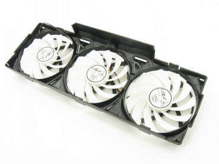

Arctic Accelero Xtreme Plus ir Twin Turbo Pro - aušintuvai Jūsų karštoms vaizdo plokštėms
Arctic, anksčiau žinoma Arctic Cooling vardu, į galvą ateina dažnai, kai galvojama apie naują aušintuvą greitai vaizdo plokštei. Situacija nėra labai pasikeitusi ir dabar. Nors Arctic ir pradėjo plėsti savo veiklą, užsiimdama ne tik aušintuvų, bet ir kompiuterių periferijos gamyba, kompanija savo arsenale turi karščiausioms vieno GPU vaizdo plokštėms skirtus Accelero Xtreme Plus modelius, o šiek tiek mažiau reikliems vartotojams - Twin Turbo Pro modelius. Būtent šiuos du modelius apžvelgti ir gavome iš Arctic.
Dėl įvairių aplinkybių apžvalga vėluoja kone pusmetį, ir tokiu metu jau greičiausiai būtume turėję ir naujesnį Accelero Xtreme Plus II aušintuvą. Bet yra kaip yra, ir šiandien apžvelgiami aušintuvai tikrai nėra neaktualūs, todėl siūlau susipažinti su jais iš arčiau.
Accelero Xtreme Plus
Komplektacija
Accelero Xtreme Plus mažoje plastikinėje pakuotėje be aušintuvo randame tik ventiliatoriaus laido adapterį į 7 ir 12 V maitinimui iš "molex" lizdo, tvirtinimo varžtus, montavimo instrukciją ir praplėtimo lizdo angą korpuse uždengiančią plokštelę. Viskas. Nesvarbu, iš kurios pusės žiūrėčiau į tokią komplektaciją, ji yra per skurdi. Tai aukštos klasės vaizdo plokštėms skirtas produktas, todėl VRM radiatorius(-iai) yra būtinybė. Dabar tai įsigyti tektų papildomai (su Accelero Xtreme Plus Pro jau pridedama daugiau priedų). Tiesa, VRAM radiatorių nebuvimą galima visiškai pateisinti. Atminties lustai nėra ta dalis, kuriai reiktų papildomo aušinimo, išskyrus pavienius atvejus, kai užsiimama labai rimtu spartinimu.
Specifikacijos
Suderinamų vaizdo plokščių sąrašas gamintojo tinklapyje.
Aušintuvas
Aušintuvas sudarytas iš radiatoriaus ir plastikinio rėmelio su trimis ventiliatoriais. Jo dizainas įprastas daugumai "aftermarket" vaizdo plokščių aušintuvų: ventiliatoriai vėsų orą iš viršaus pučią į radiatorių, kuris su šiluminiais vamzdeliais sujungtas su aušintuvo pagrindu. Kitaip nei "blower" tipo aušintuvuose , plastikinio kiauto paskirtis yra daugiau laikyti ventiliatorius nei geriau pasklaidyti jų sukuriamą srautą. Nuėmus ventiliatorius (tai paprasčiausia padaryti plokščiu atsuktuvu atkabinant plastmasinius "dantukus" abiejose pusėse) matyti masyvas, sudarytas iš trijų radiatorių. Vidurinė dalis sujungta tiesiai su pagrindu be šiluminių vamzdelių ir pasukta 90 laipsnių, lyginant su likusiais dviem. Ji sudaryta iš pakankamai storų aliuminio plokštelių. Likę du radiatorius veria penkti variniai šiluminiai vamzdeliai aliuminio plokštelėms atiduodantys šilumą. Sprendime nėra kažko novatoriško, tačiau įspūdį daro pagrindinio radiatoriaus dydis. Kitaip nei "mažasis" radiatorius, šis yra bent keturis kartus ilgesnis ir netgi ant 24 cm ilgio plokštės Accelero Xtreme Plus išsikiša už plokštės ilgio bene 5 centimetrus. Radiatorių plokšteles nuo netyčinio susilankstymo saugo užlenkti jų krašteliai.
Aušintuvo pagrindas varinis. Tiesa, jo apdirbimas nėra pačios aukščiausios klasės - veidrodinio atvaizdo jame tikrai nepamatysite. Arctic ant šio pagrindo yra jau iškart užtepusi savo MX-4 termopastos. Dviem varžtais ant pagrindo prisuktas metalinis rėmelis, skirtas tvirtinti aušintuvą prie vaizdo plokštės. Keturios tvirtinimo skylės čia yra fiksuotoje pozicijoje, taigi su šiuo rėmeliu aušintuvą galima tvirtinti tik ant tų vaizdo plokščių, kurios turi standartinį kiaurymių išdėstymą.
Malonu matyti ir dvigubą trijų bei keturių kontaktų ventiliatorių maitinimo kabelį, kurį galima jungti tiesiai į vaizdo plokštę. Tiems, kurie pageidauja jungti ventiliatorius tiesiai prie maitinimo šaltinio arba sumažinti maitinimo įtampą iki 7V, skirtas adapteris.
Ventiliatoriai
Su Accelero Xtreme Plus komplektuojami trys, įprastos Arctic, baltos spalvos 92 mm skersmens ventiliatoriai su 11 per daug neišsiskiriančių mentelių. Jie valdomi PWM ir sukasi 900 - 2000 RPM greičiu. Ir nors 2000 RPM atrodo tikrai nemažai, kaip pamatysite vėliau, triukšmas su jais nėra problema.
Ventiliatorių guoliuose sumažinti trintį naudojamas tepimas skysčiu. Bendras trijų ventiliatorių sukuriamas oro srautas - 81 CFM arba 138 m³/h. Turint omenyje, jog naudojami net trys ventiliatoriai, tai tikrai nedaug, tačiau viskas vardan gero aušinimo ir sukeliamo triukšmo santykio.
Ventiliatoriai maitinami 12 V įtampa, prie 2000 RPM naudojama 0,15 A srovė.
Kadangi tokie patys ventiliatoriai naudojami ir su Twin Tubo Pro aušintuvu, daugiau jie aprašinėjami nebus.
Montavimas

Nepaisant dydžio, šio aušintuvo montavimas yra labai paprastas. Viskas ką reikia padaryti, tai nuimti senąjį aušintuvą, uždėti naująjį, prisukti jį keturiais varžtais (nepamirštant tarpinių) ir prijungti ventiliatorių laidelį. Tiesa, jį prijungti patogiausia yra dar neuždėjus masyvaus radiatoriaus, kuris dėl savo dydžio gali uždengti ventiliatoriaus lizdą.
Vaizdo plokštė su šiuo aušintuvu užima tris praplėtimo lizdus, kas šiek tiek apsunkintų viršutinės plokštės aušinimą naudojant SLI/Crossfire. Jei jūsų vaizdo plokštė nėra iš pačių didžiausių kategorijos (30cm+), prieš galvojant, ar įsigyti Accelero Xtreme Plus reiktų pagalvoti, ar su šiuo aušintuvu ji ir tilps į korpusą.
Twin Turbo Pro
Komplektacija
Twin Turbo Pro komplektacija kur kas gausesnė. Be paties aušintuvo, 7/12 V adapterio, tvirtinimo varžtų, instrukcijos ir galinės plokštelės (tokį komplektą turėjo Accelero Xtreme Plus) čia randame ir antrą galinę plokštelę, 8 pavienius aliuminio radiatorius atminties lustams, vieną ilgą radiatorių, uždengiantį keturis atminties lustus bei keturis nedidelius VRM radiatorius. Taigi be papildomų išlaidų Twin Turbo Pro galima aušinti daugumą vidurinės klasės vaizdo plokščių.
Specifikacijos
Suderinamų vaizdo plokščių sąrašas gamintojo tinklapyje.
Aušintuvas
Twin Turbo Pro aušintuvo konstrukcija kur kas paprastesnė, tačiau esminis aušintuvo veikimo principas tas pats - vėsiu oru apipūsti visą radiatoriaus masyvą iš karto. Kaip ir "didysis brolis", Twin Turbo Pro kartu su vaizdo plokšte užims taip pat tris praplėtimo lizdus.
Radiatorius sudarytas iš vienos, o ne iš trijų dalių. Su variniu pagrindu jis jungiamas keturiais šiluminiais vamzdeliais. Aliuminio plokštelių galai taip pat užlenkti, jog plokštelės bent kiek būtų apsaugotos nuo lankstymosi. Kaip matyti iš aušintuvo profilio, radiatorius nėra vienodo aukščio per visą savo ilgį. Gale, kur dažnai reikalingas papildomas aušinimas įtampos reguliatoriui.

Pagrindo apdirbimo kokybė identiška Accelero modeliui. Ant jo, šįkart keturiais varžtais, priveržtas tvirtinimo rėmelis. Ir jis kiekviename kampe jau turi ne po vieną, o po dvi tvirtinimo angas, taigi yra suderinamas su didesniu vaizdo plokščių skaičiumi. Ant pagrindo taip pat užtepta MX-4 termopasta. Pagal užtepimo formą atrodytų, jog aušintuvas iškart paruoštas montuoti ant GTX460/560 serijos vaizdo plokščių.
Ventiliatorių maitinimui randame tokį patį dvigubą laidą prijungimui, kaip ir Accelero Xtreme Plus aušintuve. Du identiškus ventiliatorius laiko panašus plastikinis rėmelis.
Montavimas
Paties aušintuvo montavimas tik nežymiai skiriasi nuo Xtreme Plus modelio. Jei su pastaruoju užteko uždėti aušintuvą ir prisukti keturis varžtus su tarpinėmis, tai čia dar reikia nulupti popieriukus pagrindo kraštuose ir atitinkamose vietose priklijuoti dar keturias tarpines. Vargo, žinoma, daugiau, tačiau suderinamų vaizdo plokščių sąrašas dėl to tampa ilgesnis. Tiesa, montavimą galima padaryti ir paprastesnį (kaip pvz. Thermalright T-Rad2 GTX atveju). Peršasi išvada, jog toks sprendimas pasirodė pigiausias.
Prisukus visus keturis varžtus lieka prijungti ventiliatorius į vaizdo plokštę ar "molex" kištuką. Radiatorius žymiai mažesnis už Accelero Xtreme, todėl su dauguma vaizdo plokščių tai ko gero bus paskutinis žingsnis montuojant aušintuvą.
Jei nusprendėte naudoti pridedamus atminties ir VRM radiatorius, juos užklijuoti reikia pirmiausia. Papildomų klijų jiems nereikia, pakanka tik nulupti apsauginius popierėlius nuo lipnios pusės ir, nuvalius tranzistorius ar atminties lustus, juos užklijuoti.
Testai
Šiek tiek apie testavimo procedūras. Abu aušintuvai buvo testuojami su ne pirmos jaunystės, tačiau daug karščio sugebančia išskirti XFX Radeon HD4870 1 GB vaizdo plokšte (veikimo dažniai: 775 ir 950 MHz atitinkamai grafikos procesoriui ir atminčiai). Ši plokštė turi taip pat dar vieną labai gerą savybę aušintuvų testavimui - baisiai kaistančius įtampos reguliatorius (temperatūros gali pasiekti ir 100 laipsnių pagal Celsijų). Visgi, kadangi dar anksčiau išsiaiškinau, jog nedidukai radiatoriai dauguma atvejų šiems reguliatoriams yra tikrai per silpni, visuose testuose (išskyrus tą atvejį, kai testuojama standartinis HD4870 aušintuvas) papildomai bus naudojamas Thermalright VRM1 radiatorius. Jis puikiai ataušina VRM lustus su praktiškai bet kokiu aušintuvu, tačiau šiokie tokie skirtumai tarp VGA aušintuvų ir su atsiranda.
Testuojant abu Arctic aušintuvus jų rezultatas bus lyginamas ne tik su standartiniu HD4870 aušintuvu, bet ir su labai pajėgiu Thermalright T-Rad2 GTX aušintuvu (su tuo pačiu papildomu masyvaus VRM-1 radiatoriumi), kartu su vienu 120 x 120 mm Tuniq AGA12025F12I ventiliatoriumi, besisukančiu 2000 RPM greičiu.
Temperatūros stebėti naudota MSI Afterburner ir AIDA64 programinė įranga, vaizdo plokštėms apkrauti - Furmark 1.9 (1280x720, 4xAA, Extreme Burn-in). Vaizdo plokštės dažniai nebuvo didinami. Temperatūros fiksuotos kompiuteriui esant ramybės būsenoje ir po 10 minučių apkrovos Furmark testu. Grafikuose pateikiamos trijų GPU zonų temperatūros bei įtampos reguliatorių temperatūros. Aplinkos temperatūra visais atvejais siekė apie 28 laipsnius pagal Celsijų ir nežymiai svyravo iki 0,5 laipsnio. Papildomai matuotas ir aušintuvų sukeliamas triukšmas (15 cm nuo vaizdo plokštės, atidarytame korpuse). Testų kompiuterio konfigūracija pateikiama žemiau:
-
Intel Core i7-870 @ 2,93 GHz, HT: on, Turbo: off
-
MSI P55-GD65
-
XFX Radeon HD4870 XXX 1 GB
-
Apacer Value DDR3-1333, 9-9-9-24
-
Antec P192
-
Antec CP-850, 850 W
-
WD Blue WD5000AAKS, 500 GB
Nors testų metu abiejų Arctic aušintuvų ventiliatoriai ir buvo prijungti prie HD4870 vaizdo plokštės, automatinis apsukų reguliavimas neveikė, ir ventiliatoriai sukosi maksimaliomis apsukomis. Grafike pateikiamos trijų GPU sensorių ir VRM modulių temperatūros.
-
Vaizdumo dėlei parašysiu, kokiomis apsukomis dirbo kiekvieno aušintuvo ventiliatoriai:
-
HD4870 Stock (Idle) ~1030 RPM
-
HD4870 Stock (Load) ~ 2050 RPM
-
HD4870 Srock @ Max RPM ~ 4800 RPM
-
T-Rad2 GTX ~ 2000 RPM
-
Accelero Xtreme Plus ~ 2100 RPM
-
Accelero Twin Turbo Pro ~ 2050 RPM
Visi ventiliatoriai, išskyrus standartinį HD4870 aušintuvą, tiek 2D, tiek ir 3D režimuose sukosi vienodu greičiu.
Rezultatai
Aušinimo efektyvumas
Kaip matote, neapkrovus vaizdo plokštės, didžiulis skirtumas atsiranda tarp automatinėmis apsukomis veikiančio HD4870 aušintuvo ir visų trijų "aftermarket" produktų. Apsukų padidinimas iki maksimumo turi labai didelę įtaką temperatūroms, ir šios priartėja prie likusių trijų aušintuvų. Iš jų geriausią rezultatą, kaip ir buvo galima tikėtis, rodo Accelero Xtreme Plus. Accelero Twin Turbo Pro tvirtai laikosi antroje vietoje, lenkdamas T-Rad2. Tiesa, negalima nurašyti T-Rad, kadangi su pora 92 mm ventiliatorių jo rezultatai gali būti geresni. VRM temperatūros tarp trijų aušintuvų beveik identiškos, kadangi su jais naudojamas tas pats VRM-1 aušintuvas. HD4870 standartinis aušintuvas čia nusileidžia net sukdamasis maksimaliomis apsukomis.
Apkrovus vaizdo plokštę situacija pasikeičia nežymiai. Pirmiausia, akivaizdžiai matyti išaugęs Xtreme Plus pranašumas. Twin Turbo ir vėl antroje pozicijoje, o T-Rad2 aušina apylygiai, kaip gamyklinis aušintuvas, veikdamas maksimaliomis apsukomis. Jam sukantis automatinėmis apsukomis ne tik įtampos reguliatorių, bet ir grafikos procesoriaus temperatūros tampa labai aukštos.
Triukšmo lygiai
Vien aušinimo rezultatai be aušintuvų keliamo triukšmo pasako ne viską. Nors HD4870 gamyklinis aušintuvas, veikdamas maksimaliomis apsukomis ir gali išlaikyti pakankamai žemas GPU temperatūras, didelio noro būti toje pačioje patalpoje, kur jis ūžia, tikrai nekyla. Tuo tarpu Accelero modeliai veikia tyliai net maksimaliomis apsukomis. O su kitomis vaizdo plokštėmis nustačius automatinį apsukų reguliavimą, 2D režime veiktų netgi tyliau.
Išvados
 Daugumos vaizdo plokščių aušintuvai gali gana gerai jas atvėsinti, kai padidinamos apsukos, tačiau tikrasis iššūkis yra tai padaryti nesukeliant per daug triukšmo. Abiems šiandien apžvelgiamiems Arctic aušintuvams tai pavyksta padaryti labai gerai. Jų montavimas paprastas, o pirmą kartą keičiantiems vaizdo plokštės aušintuvą sunkiausia gali pasirodyti tik nuimti senąjį vaizdo plokštės aušintuvą. Iš temperatūrų esant apkrautai vaizdo plokštei matyti, jog Accelero Xtreme Plus pritaikytas labiau kaistantiems grafikos procesoriams ir gali būti rekomenduojamas pačių "ėdriausių" vaizdo plokščių savininkams, kurie nori užsiimti ir spartinimu ir negirdėti dulkių siurblio garso, kurį skleidžia nemaža dalis gamyklinių "blower" tipo vaizdo plokščių aušintuvų. Kita vertus, produkto komplektacija labai skurdi, ir perkant jį pirkti papildomai teks ir VRM aušintuvą, kuris prie ~35 eurų pridės dar iki 5.
Daugumos vaizdo plokščių aušintuvai gali gana gerai jas atvėsinti, kai padidinamos apsukos, tačiau tikrasis iššūkis yra tai padaryti nesukeliant per daug triukšmo. Abiems šiandien apžvelgiamiems Arctic aušintuvams tai pavyksta padaryti labai gerai. Jų montavimas paprastas, o pirmą kartą keičiantiems vaizdo plokštės aušintuvą sunkiausia gali pasirodyti tik nuimti senąjį vaizdo plokštės aušintuvą. Iš temperatūrų esant apkrautai vaizdo plokštei matyti, jog Accelero Xtreme Plus pritaikytas labiau kaistantiems grafikos procesoriams ir gali būti rekomenduojamas pačių "ėdriausių" vaizdo plokščių savininkams, kurie nori užsiimti ir spartinimu ir negirdėti dulkių siurblio garso, kurį skleidžia nemaža dalis gamyklinių "blower" tipo vaizdo plokščių aušintuvų. Kita vertus, produkto komplektacija labai skurdi, ir perkant jį pirkti papildomai teks ir VRM aušintuvą, kuris prie ~35 eurų pridės dar iki 5.Accelero Xtreme Plus gauna 4/5 įvertinimą.
 Accelero Twin Turbo Pro kaip paprastesnių vaizdo plokščių aušintuvas atrodo labai gerai. Neturintiems pačių galingiausių vaizdo plokščių, kurių TDP siekia visus 200 W ar netgi daugiau tai atrodo kaip labai geras sprendimas. Ypač turint omenyje, jog jis veikia netgi tyliau nei Xtreme Plus, o jo kaina su gausesne komplektacija siekia tik apie 20 eurų. Netgi su ganėtinai karšta HD4870 jis susidoroja labai gerai.
Accelero Twin Turbo Pro kaip paprastesnių vaizdo plokščių aušintuvas atrodo labai gerai. Neturintiems pačių galingiausių vaizdo plokščių, kurių TDP siekia visus 200 W ar netgi daugiau tai atrodo kaip labai geras sprendimas. Ypač turint omenyje, jog jis veikia netgi tyliau nei Xtreme Plus, o jo kaina su gausesne komplektacija siekia tik apie 20 eurų. Netgi su ganėtinai karšta HD4870 jis susidoroja labai gerai.Accelero Twin Turbo Pro gauna 4,5/5 įvertinimą.


{kind=link}
{kind=link}
{kind=link}
{kind=link}
{kind=link}
{kind=link}
{kind=link}
{kind=link}
{kind=link}
{kind=link}
{kind=link}
{kind=link}
{kind=link}
{kind=link}
{kind=link}
{kind=link}
{kind=link}
{kind=link}
{kind=link}